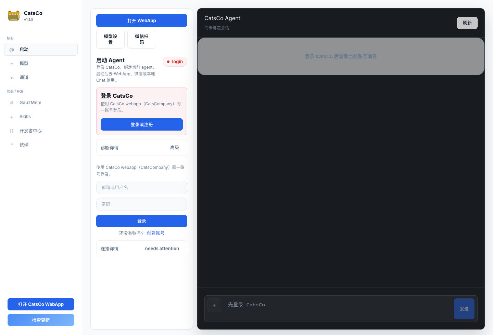
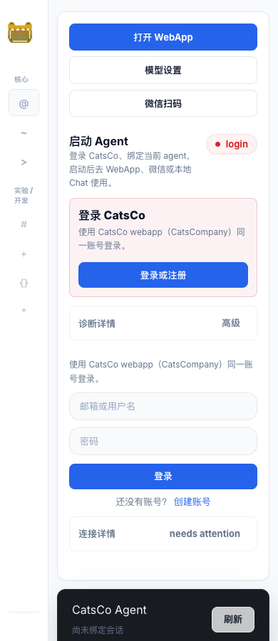
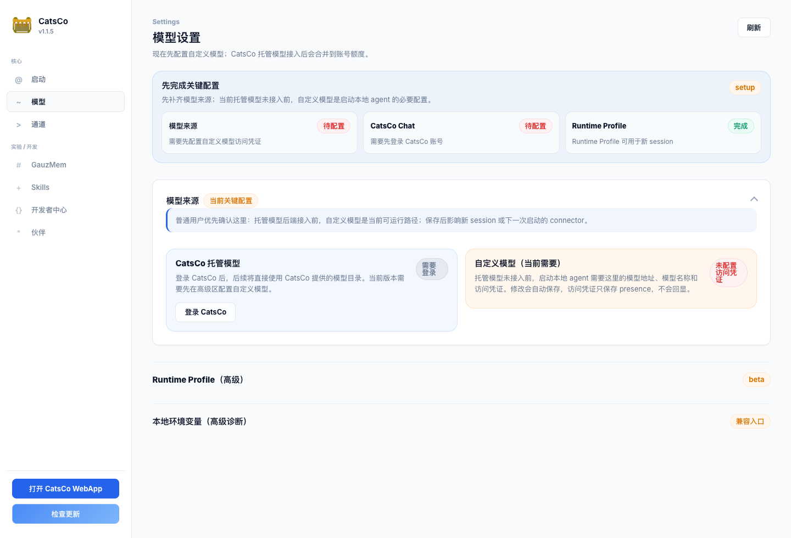
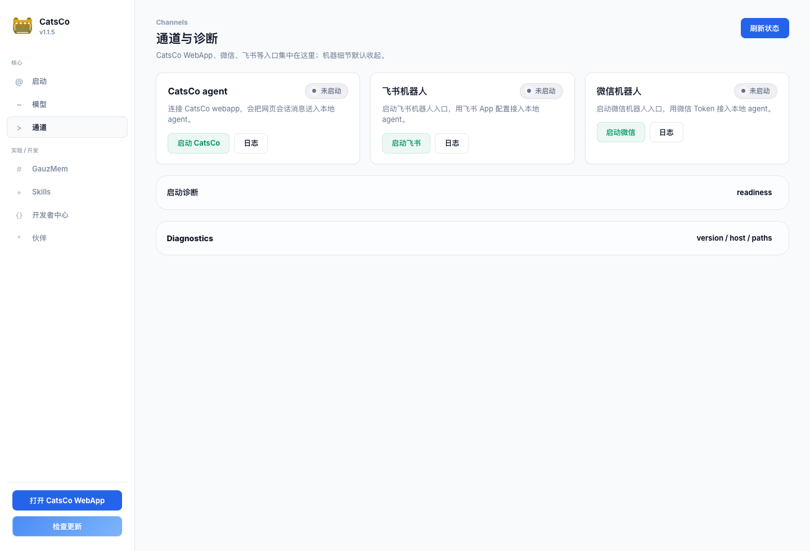
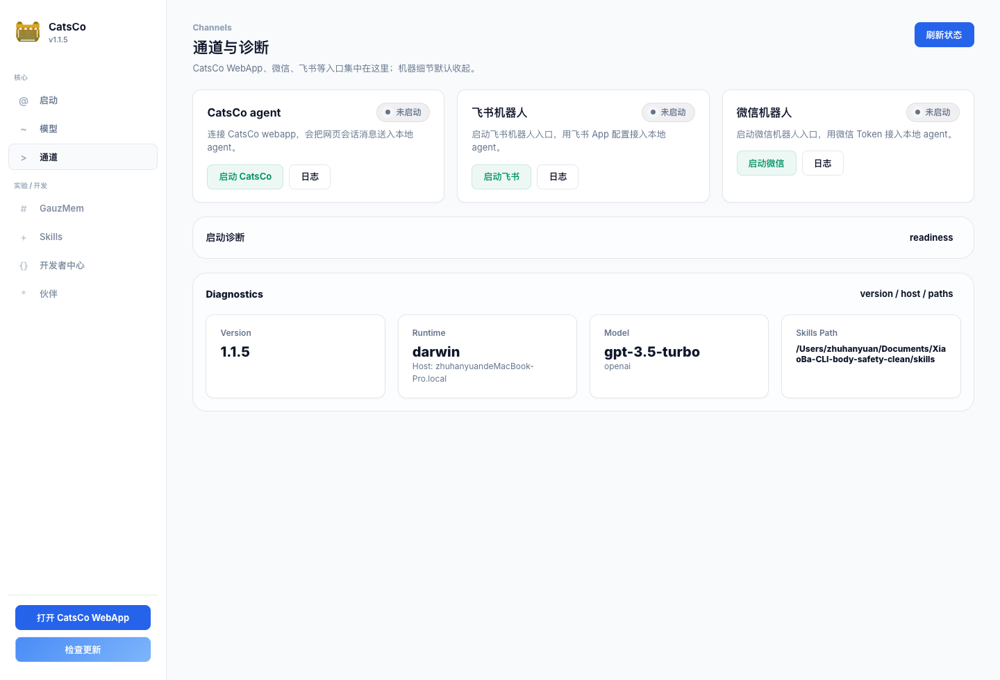

启动页 · 桌面
- 信息层级倒置：Chat 占了约 65% 宽度，但未登录时不能用；启动流程只占窄列。
- 登录入口重复：有红色登录状态卡、登录或注册按钮、下面又有完整登录表单。
- “打开 WebApp”同时出现在顶部和侧栏底部，视觉权重重复。
- “login”英文标签、`needs attention` 英文标签破坏中文产品感。
当前版本已经比之前清爽，但交互重心仍然不够明确：用户第一次打开时，右侧 Chat 占据最大面积，左侧启动流程却是窄列； 视觉上有登录、诊断、状态、WebApp、模型、微信等多个同级入口，容易让人不知道“我现在应该先点哪一个”。
主屏最大区域是不可用的黑色 Chat；真正需要处理的登录、模型、绑定、启动被挤在窄侧栏。
“login / 待配置 / setup / needs attention”等状态在无错误时也像报警，造成焦虑感。
启动、模型、通道这三个主入口是合理的，下一步应把它们做成一个连续向导，而不是分散页面。





| 当前页面 | 保留 | 降级/隐藏 | 建议改名 |
|---|---|---|---|
| 启动 | 登录、模型状态、agent 绑定、启动 connector、打开 WebApp | 不可用 Chat、重复登录表单、body 细节、英文状态 | 首页 / 启动 Agent |
| 模型 | 托管模型 / 自定义模型选择、自定义模型表单、测试连接 | Runtime Profile、env、readiness 细节 | 模型与额度 |
| 通道 | CatsCo WebApp、微信、飞书、API 入口 | PID、uptime、日志按钮、服务命名 | 聊天入口 |
| 实验/开发 | GauzMem、Skills、开发者中心、伙伴 | 默认不在主导航打扰普通用户 | 实验室 |
未登录/未配置模型时，主区域应该是 3-4 步 setup checklist；Chat 只在 ready 后成为主区域。
未登录、未配置属于正常初始化状态，建议用蓝/灰；红色只给 token 无效、body 冲突、启动失败。
把 login、setup、needs attention、readiness、Diagnostics 等改成中文，英文只留给开发诊断展开区。
当前模型页和启动页都存在卡片内再放卡片的感觉。建议用步骤列表、分段表单和单个主 CTA 替代。
| 审视角色 | 要回答的问题 | 希望输出 |
|---|---|---|
| 产品/信息架构 | 首次用户是否知道下一步？哪些入口可以删除或合并？ | 主流程、页面分组、命名建议。 |
| 视觉/UI | 颜色、字体、卡片、留白、状态标签是否专业？ | 视觉优先级、组件风格、具体可改点。 |
| 前端实现/响应式 | 哪些调整能快速落地，哪些会牵扯后端或状态管理？ | 低风险改动顺序、测试点、潜在风险。 |
dashboard/index.html
docs/assets/dashboard-uiux-audit/01-start-desktop.png
docs/assets/dashboard-uiux-audit/02-model-desktop.png
docs/assets/dashboard-uiux-audit/03-channels-desktop.png
docs/assets/dashboard-uiux-audit/04-channels-diagnostics-desktop.png
docs/assets/dashboard-uiux-audit/05-start-mobile.png
docs/assets/dashboard-uiux-audit/06-model-mobile.png